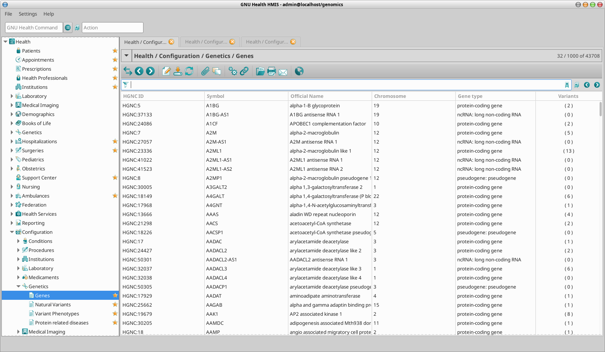
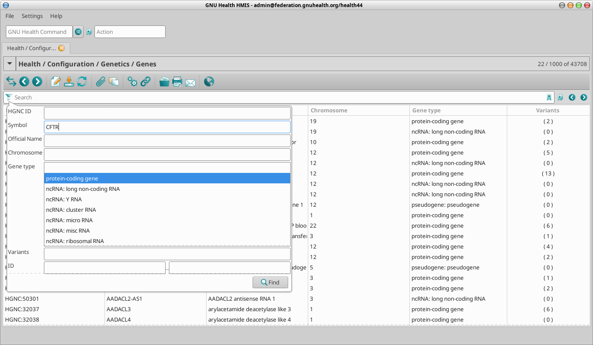
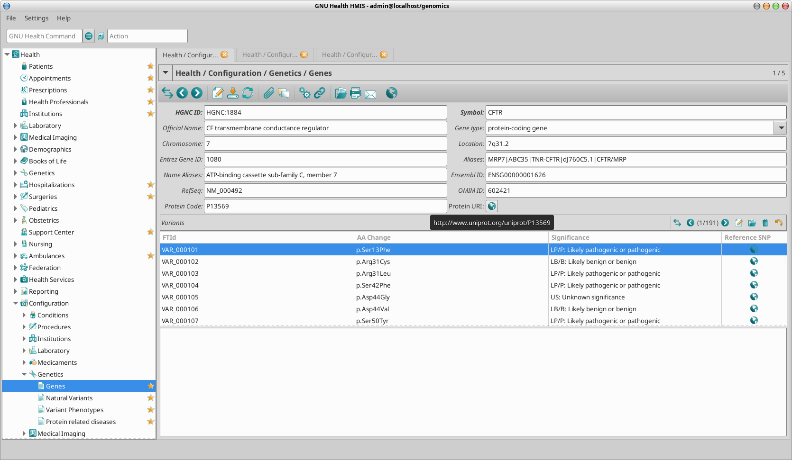
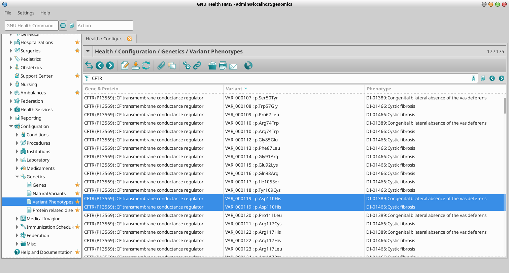
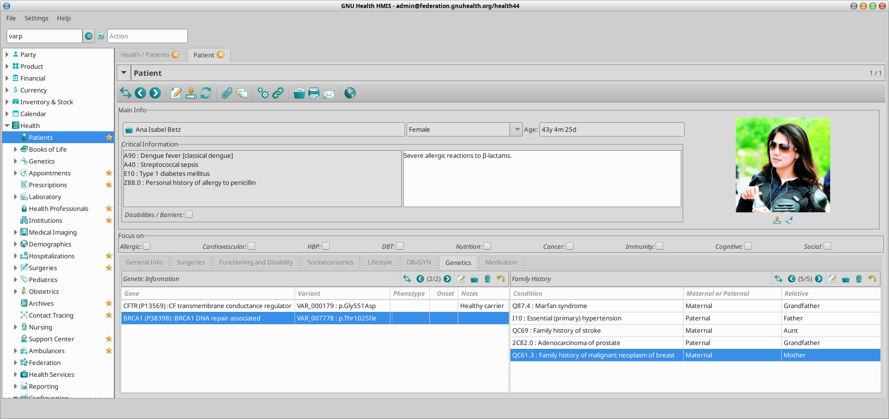
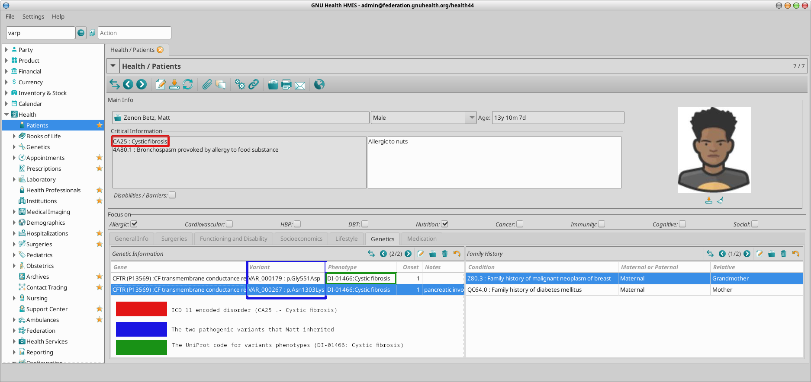
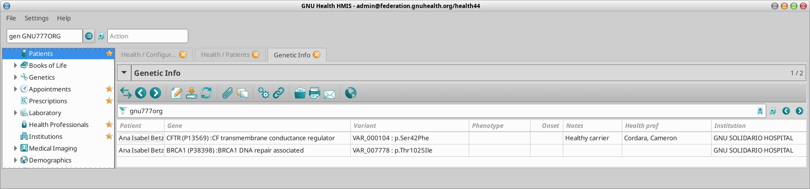

Genetics
Overview
GNU Health medical genetics functionality is provided by the following packages:
health_genetics
health_genetics_uniprot
GNU Health genetic functionality combines the molecular and environmental bases of health and disease unique for each individual, foundation for precision medicine.
The GNU Health genetic functionality can be used both in the clinical and research contexts.
GNU Health incorporates extensive information from Hugo Gene Nomenclature Committee (HGNC) The National Center for Biotechnology Information NCBI and from the UniProt Consortium gene natural variants and protein-related human health conditions.
The screenshots provided on this section aim to facilitate the usage of the genetic packages, as basic workflows and data entry. We will be using two of our (fictional) family members Ana Betz and her son, Matt. The CFTR (Cystic Fibrosis transmembrane conductance regulator) will be used to illustrate different objects and contexts of the GH genetic functionality.
Core genetics package
GNU Health genetic related packages integrate family history and individual relevant genetic information.
The core genetics package provides main functionality, datamodel and relationships with other objects in the GNUHealth data dictionary.
The main models included in this package are:
Genes
Protein related diseases
Family History
Personal genetic information
Natural variants
Variants phenotypes.
The Genes model which its atributes will be detailed next wil hold the HGCN dataset, which is also included on the health_genetics package.
The Gene Model
The main attributes are:
HGNC Id: HUGO Gene Nomenclature Committee ID for the gene.
Official Symbol: Gene symbol dictated by HGNC (eg .. CFTR)
Long Name: Official long name (eg CF transmembrane conductance regulator)
Aliases: Alternative symbols (eg .. MRP7|ABC35|TNR-CFTR|dJ760C5.1|CFTR/MRP)
Locus: Location of the gene in the chromosome
Type: Type of gene (eg, protein-coding, ncRNA, pseudogene..)
Variants: List of natural variants associated to the gene (from UniProt)
Encoding protein (ID and URI)
There are other fields such as RefSeq, Ensembl and OMIM IDs that help referencing related resources.
Natural Variant
Gene
Change in amino acid
Phenotype
Clinical significance
LB/B: Likely benign or benign
LP/P: Likely pathogenic or pathogenic
US: Unknown Significance
Variant Phenotype(s)
Accessing the genes dataset
You can access the genes dataset via menu or via GH Command line.
Menu: Health -> Configuration -> Genetics -> Genes
Command Line : gdis


Filtering / refining the search criteria
As in any model in GNU Health, you can restrict the search combining search arguments.


Viewing details of the gene
Once you have selected the gene in particular from the list view, you can access the form / detailed view by double clicking on it. In our example of the CFTR gene:


Health Genetics UniProt Package
While the genetics core package defines the genomics and medical genetics models, the health_genetics_uniprot loads the meaningful data.
The datasets included in this package are:
Human genes natural variants
Variant phenotypes
Genetic and Protein Related Disorders
Human Genes Natural Variants
GNU Health HIS combines HGNC with the UniProt human natural variants datasets. These two excellent sources provide acurate information and links to uptodate online references to the particular variant related to the patient.
Previously we saw that when selecting a particular gene we can see the all its natural variants. In the tree view, you will see a number. In the CFTR gene, the shows that contains 191 natural variants.
Variant Phenotypes
GNU Health also provides a way to study the phenotypes associated to the gene natural variants. We can access the variant phenotypes via command line or menu:
Command line: “VARP”
Menu : Health -> Configuration -> Genetics -> Variant Phenotypes
We can search for a particular phenotype or disorder, a change in the aminoacid, the gene or the feature ID of the variant (FTid).
In our example of the CFTR gene, we highlight the fact of a particular variant responsible of more than one phenotype. In the example, variant with UniProt FTid VAR_000119 (aa change p.Asp110His) has been documented to be involved in two phenotypes:
DI-01389: Congenital bilateral absence of the vas deferens
DI-01466: Cystic fibrosis




Personal Genetic Information
GNU Health stores the details on each of the genes that are relevant for the individual. This information can be accessed from the “Genetics” tab on the patient main form.
Gene involved: Information about the gene. The gene code, official long name, chromosome and locus. It also provides information about the protein encoded and the link to UniProt protein code.
Natural Variant: The specific amino acid change.
Phenotype: This field is used if the person shows clinical signs associated to the expression of that gene variant.
Onset : Age (expressed in years) of first clinical signs.
Notes : Comments contextualized to the individual.
If we rather want to see the genetic information at population level, then we can use the menu:
Health -> Personal Genetic Information
Family History
GNU Health shows extra info related to diseases including the name, code and main disease category, genetic data and a free text box for adding relevant extra info.


Genetic testing and Medical history
So far we’ve seen how to register the genetic information and family history of the individual, and we know will see how to register a particular phenotype or disorder.
A positive result of a particular genetic test does not necessarily equates to disease, as we see in many late-onset disorders.
In our family example, Ana Betz is a (healthy) carrier for a pathogenic variant in the CFTR gene, involved in cystic fibrosis.
Her son, Matt, carries two pathogenic alleles of the CFTR and he shows clinical signs compatible with Cystic Fibrosis.
When both the molecular testing and the clinical signs are present, we can then encode the corresponding ICD11 (or whatever coding standard) corresponding with the disease.
Ana Betz has a child (Matt). Cystic fibrosis is has a autosomal recessive inheritance pattern, that is, two pathogenic alleles are required to develop different signs of cystic fibrosis.
Matt has inherited two dysfunctional alleles, one from the mother (var_000179) and one from the father (var_000267). Because both alleles have been identified by molecular testing, and he has shown clinical signs compatible with the cystic fibrosis, the corresponding ICD11 (CA25) has been incorporated to his medical history.


GNU Health Commands for genetics
gen: Personal Genetic Information
gdis: Genes
var: Natural Variants
varp: Variant Phenotypes
pdis: Genetic / Protein diseases
The GNU Health commands allow arguments. For example, if you want to get the information related to the CFTR gene, you can type in the command line widget:
gdis CFTR
To retrieve a CFTR natural variant its Feature ID (FTid) var_000179
var VAR_000179
If you want to see the genetic information for a particular patient:
gen GNU777ORG
To access the latest information about cystic fibrosis:
pdis DI-01466

